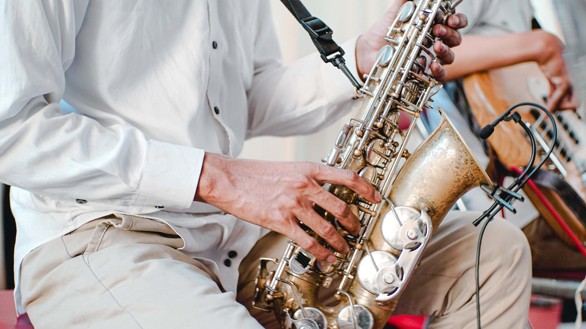

Welkom bij muziekschool H&J
Muziekschool voor koperblazers en saxofonisten

Zou het niet leuk zijn als je een saxofoon, trompet of een ander blaasinstrument zou kunnen bespelen? Dat vergt niet alleen veel oefening, maar het is ook belangrijk dat je daarbij de juiste hulp en ondersteuning krijgt. Hannah en Jesse, de muzikanten achter deze muziekschool, kunnen jou die ondersteuning geven. Ze zijn beiden afgestudeerd aan het conservatorium en hebben veel ervaring met het geven van muziekles.
De lessen worden gegeven in een prachtig en functioneel pand, waarin je ongestoord je gang kunt gaan. Ideaal om naar hartenlust te oefenen, zowel individueel als in groepsverband.
SPECIALISATIE
Muziekschool H&J is gespecialiseerd in jazzmuziek.
Veel muziekscholen richten zich op klassieke muziek. Bij Hannah en Jesse kun je echter ook les krijgen in jazzmuziek. Zoals je misschien weet, zijn koperblazers en saxofonisten een zeer belangrijk onderdeel bij jazz. Hannah en Jesse zijn grote jazzliefhebbers en hebben zich hierin gespecialiseerd.
Op deze website vind je veel informatie over wat deze muziekschool te bieden heeft, maar je kunt natuurlijk altijd vrijblijvend langskomen om meer informatie te krijgen. Je kunt dan ook kennismaken en kijken of je een klik hebt met Hannah en/of Jesse.